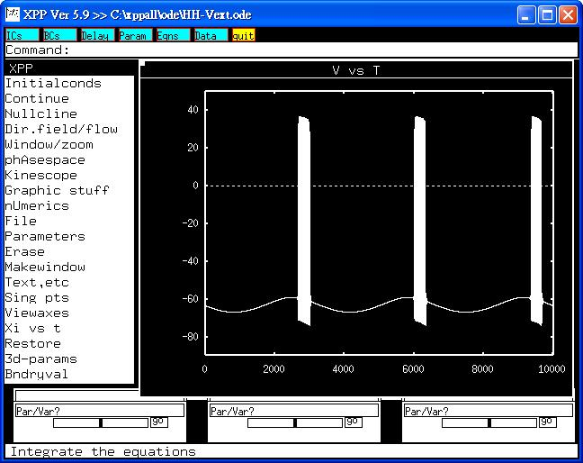

This is the readme for the model associated with the paper Chen BS, Lo YC, Liu YC, Wu SN. Effects of transient receptor potential-like current on the firing pattern of action potentials in the Hodgkin-Huxley neuron during exposure to sinusoidal external voltage. Chinese Journal of Physiology 2010; 53(6):423-429. Abstract: Transient receptor potential vanilloid-1 (TRPV1) channels play a role in several inflammatory and nociceptive processes. Previous work showed that magnetic electrical field-induced antinoceptive action is mediated by activation of capsaicin-sensitive sensory afferents. In this study, a modified Hodgkin-Huxley model, in which TRP-like current (I-TRP) was incorporated, was implemented to predict the firing behavior of action potentials (APs), as the model neuron was exposed to sinusoidal changes in externally-applied voltage. When model neuron is exposed to low-frequency sinusoidal voltage, increased maximal conductance of I-TRP can enhance repetitive bursts of APs accompanied by a shortening of inter-spike interval (ISI) in AP firing. The change in ISIs with number of interval is periodic with the phase-locking. In addition, increased maximal conductance of I-TRP can abolish chaotic pattern of AP firing in model neuron during exposure to high-frequency voltage. The ISI pattern is converted from irregular to constant, as maximal conductance of ITRP is increased under such high-frequency voltage. Our simulation results suggest that modulation of TRP-like channels functionally expressed in small-diameter peripheral sensory neurons should be an important mechanism through which it can contribute to the firing pattern of APs. ------------------------------------------- To run the models: XPP: start with the command xppaut HH-Vext.ode On selecting Initialconds -> (G)o, this simulation will make a graph similar to Figure 2a in the paper:  Changing the parameter value of gtrp and re-running will make a graph similar to Figure 2b. Notably, the value of gK should be 36 mS/cm^2. Bard Ermentrout's website http://www.pitt.edu/~phase/ describes how to get and use xpp. This model file was submitted by: Dr. Sheng-Nan Wu Department of Physiology National Cheng Kung University Medical Center Tainan City, 70101, Taiwan snwu@mail.ncku.edu.tw